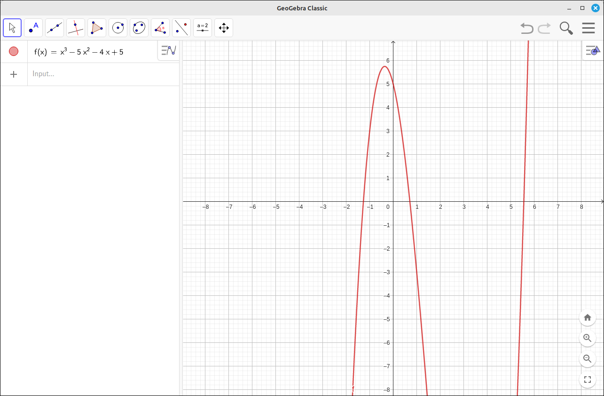
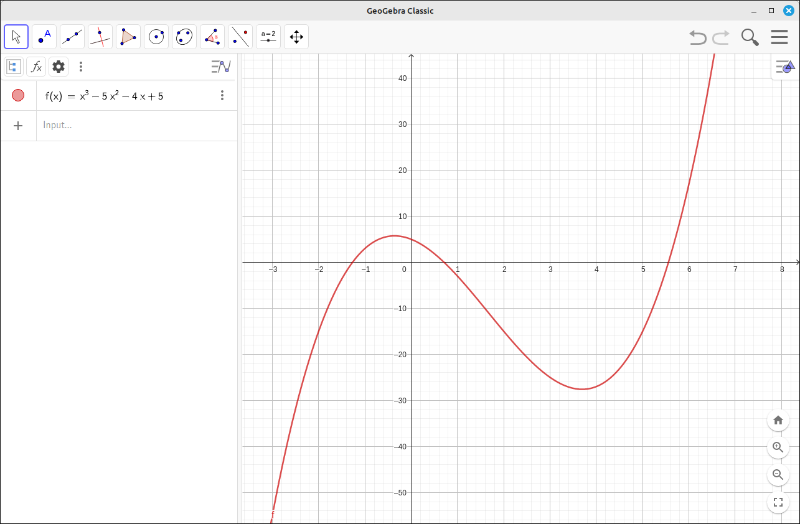
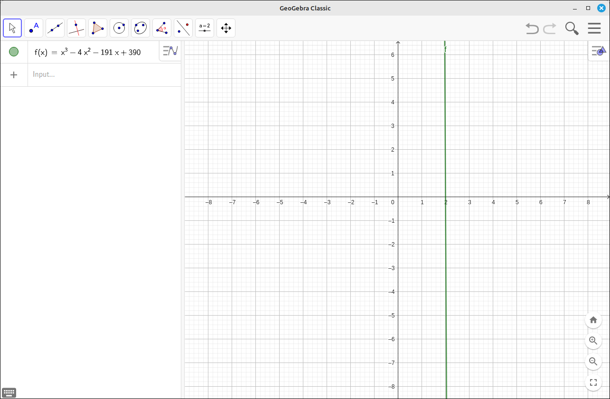
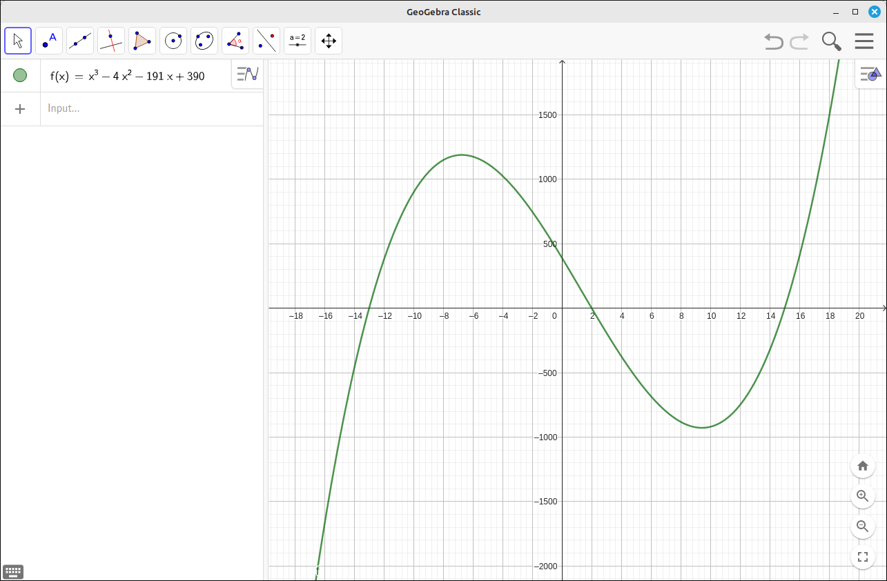
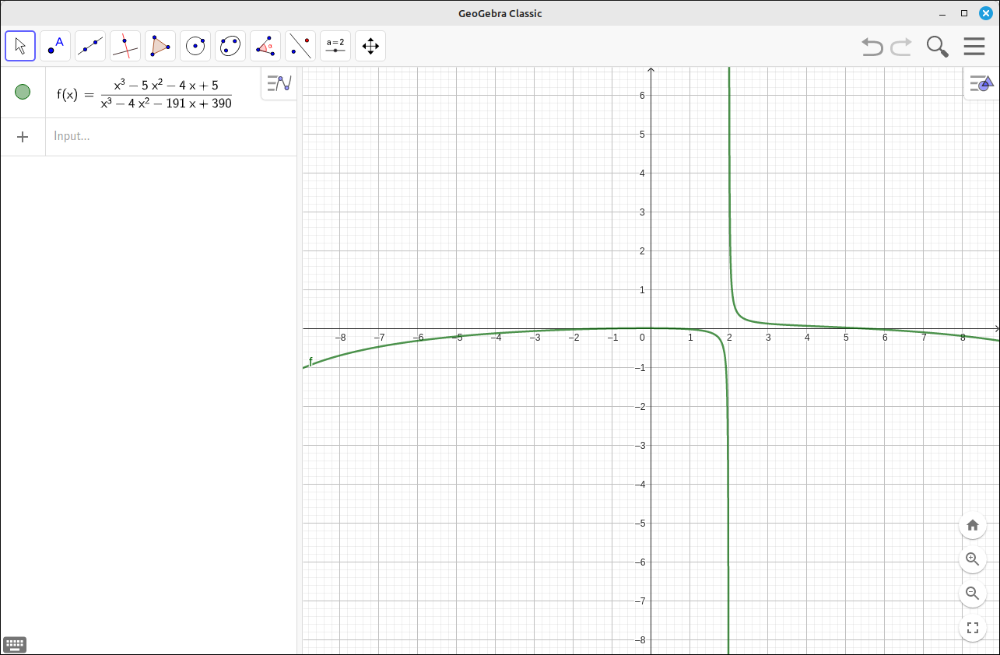
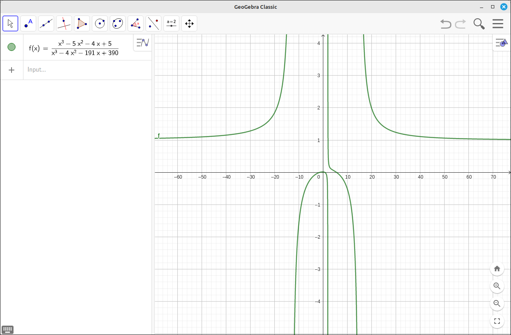
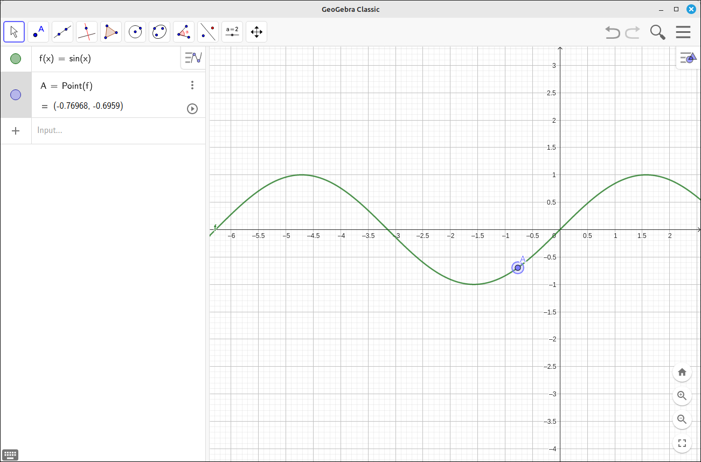
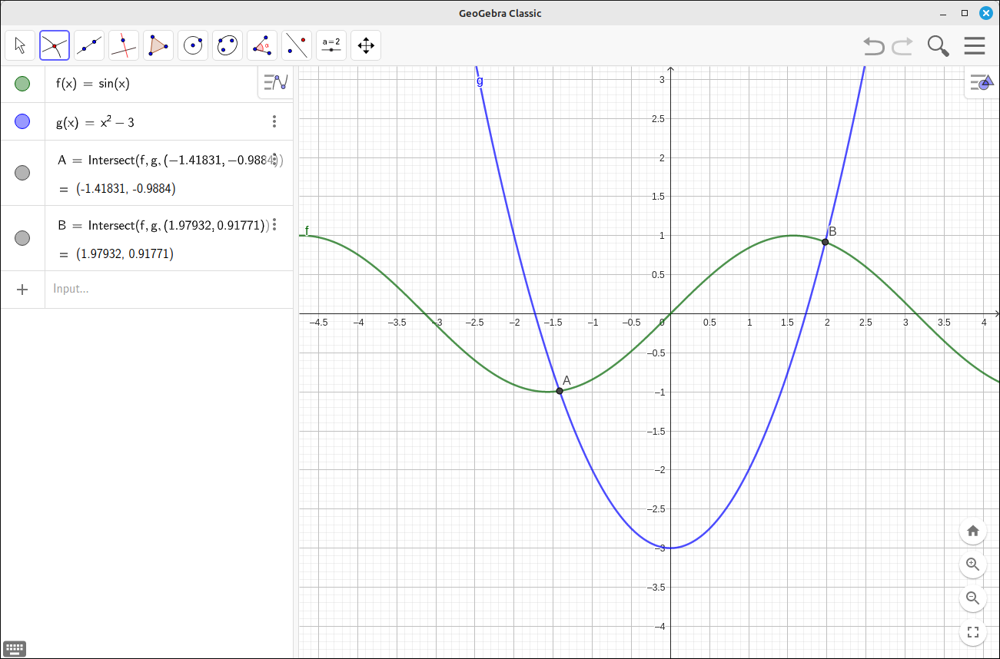

2D Graphs#
Axes Scaling and Centering#
You can scale and reposition the coordinate axes easily using the mouse and some modifier keys. By default, when the program opens the axes are in 1-1 mode, that is, the unit distance on the x-axis is the same as the unit distance on the y-axis. This gives an excellent view of the relationship between two variables but does not always show all the aspects of the function you need to see.
In general,
Left click and drag will pan the coordinate system.
The mouse wheel will zoom in and out.
Holding the shift key and left click and drag on an axis will scale the axis independently of the other.
Example: Scaling and Centering in 2-D.#
In this example we will examine the function \(f(x) = x^3-5 x^2-4 x+5\).
Start up a new GeoGebra session.
Input the expression
x^3-5 x^2-4 x+5.When you are finished hit enter and the following screen should be displayed.

Scaling and Centering Image 1#
To better view this function we would probably want to contract the y-axis a bit and expand the x-axes a little. Then probably reposition the graph so that the points of interest are centered.
Hold down the shift key and position the mouse over the y-axis. You will see the mouse cursor change to the scaling cursor. Left click and drag the mouse to resize the y-axis independently of the x-axis. Now do the same with the x-axis to spread out the roots a little. Finally, click and drag the axes to somewhat center the graph. When you are done you probably have something like the following. The image here is much easier to examine and shows many of the points of interest, roots, maximums, and minimums.

Scaling and Centering Image 2#
Example: More extreme example in scaling and centering in 2-D.#
In this example we will examine the function \(f(x) = x^3 - 4x^2 - 191 x + 390\).
Start up a new GeoGebra session.
Input the expression
x^3 - 4 x^2 - 191 x + 390.When you are finished hit enter and the following screen should be displayed. The image here does not tell us much about the function.

Scaling and Centering Image 3#
Use the mouse wheel to zoom out a bit until you can see more of the function. Now scale the x and y axes to display the function in a more informational way. Finally, recenter the axes to make the image look nice.

Scaling and Centering Image 4#
Note
When you are zooming and repositioning the graph it is easy to get into a situation where you are not seeing any of the graph and are not sure where it is. In these cases the home button in the lower right corner of the graphics viewer will reset the center and axes to the default. Then you can try to rescale and reposition the image again.
Example: End Behavior#
In this example we will examine the function \(\displaystyle f(x) = \frac{x^3 - 5x^2 - 4x + 5}{x^3 - 4x^2 - 191x + 390}\).
Start up a new GeoGebra session.
Input the expression \(\displaystyle \frac{x^3 - 5x^2 - 4x + 5}{x^3 - 4x^2 - 191x + 390}\).
When you are finished hit enter and the following screen should be displayed. Again the image here does not tell us much about the function. In fact it is a bit misleading on what the function is doing as x gets big both positively and negatively.

End Behavior Image 1#
As before, use the mouse wheel to zoom out a bit until you can see more of the function. Now scale the x and y axes to display the function in a more informational way. Finally, recenter the axes to make the image look nice. Here you can see the three vertical asymptotes and the horizontal asymptote at \(y = 1\).

End Behavior Image 2#
Points on Lines#
In many applications you will need to place one or several points on a line. GeoGebra makes this easy to do. Simply select the point tool at the top and then click on the line.

Points on Lines Example#
This attaches a point to the curve. A click and drag on the point will move the point along the curve and the position of the point is updated in the object list to the left.
Special Points#
In the menu for an item there is an option of Special Points. Selecting this will run functions on the curve to find the local extremes, roots, and the y-intercept. For example,

Special Points Example#
Intersections of Curves#
To find the point or points of intersection between two lines select the intersect tool, this is one of the options in the point tool at the top, then click on each of the two curves. This will find the point of intersection close to the position you clicked. Alternatively, you can click close to the intersection point and the program will find the intersection point if the click position was close enough. For example, if we input \(sin(x)\) and \(x^2-3\), select the two curves around \(x = -2\) the program will find the point A. Then if we click close to the other point of intersection the program will find the point B.

Intersections of Curves Example#